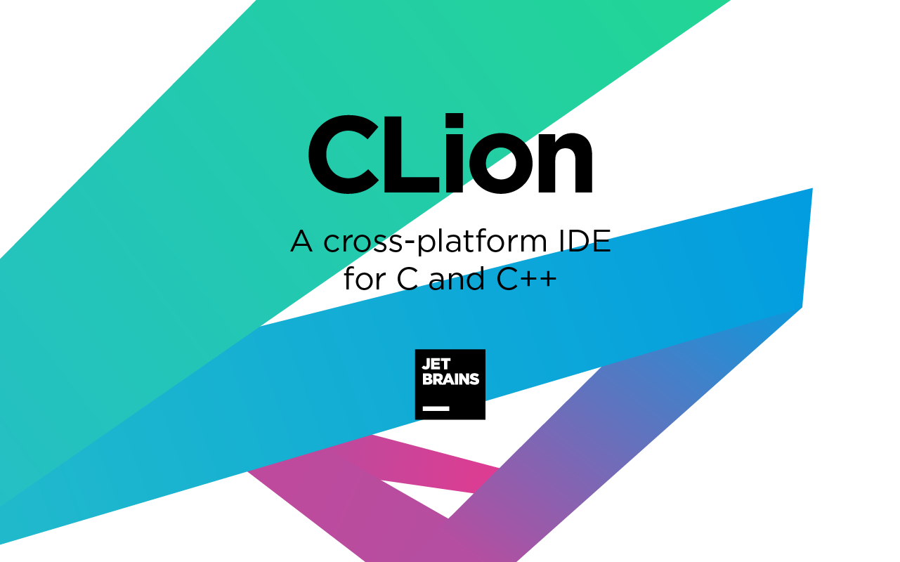

CLion
CLion — интегрированная среда разработки для языков программирования Си и C++, разрабатываемая компанией JetBrains. Состояние CLion — бесплатная пробная версия на 30 дней. Подходит для операционных систем «Windows», «macOS», и «Linux».

Возможности
Здесь вы узнаете о функциях, доступных в CLion — кросс-платформенной среде разработки для C/C++. Много полезной информации и материалов можно найти в онлайн-справке CLion.
CLion позаботится о рутинных задачах, позволяя вам сосредоточиться на важных вещах. IDE понимает ваш код от и до: умное и точное автодополнение, мгновенная навигация и надежные рефакторинги помогут вам работать намного продуктивнее.
CLion — это больше, чем просто редактор. IDE предоставляет мощный отладчик и средства динамического анализа кода, позволяющие быстро находить и устранять проблемы, поддерживает Google Test, Boost.Test, Doctest и Catch для модульного тестирования, интегрируется с популярными системами контроля версий и другими инструментами.
CLion — это прежде всего среда для нативной кросс-платформенной разработки на C и C++, а также Rust и Swift. Помимо этого IDE поддерживает языки CMake и Python, популярные веб-технологии (JavaScript, XML, HTML, Markdown и т. д.), а еще позволяет работать с другими языками через встроенные плагины и плагины, которые можно установить из репозитория.